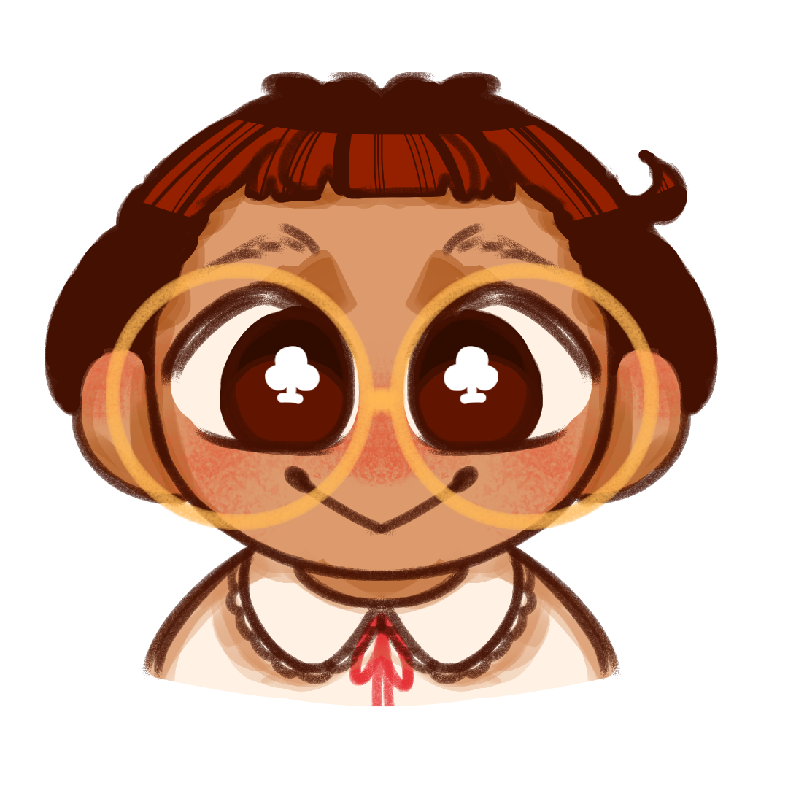

EyeCon is a 2D junior-designer simulation that turns WCAG 2.2 accessibility rules and the 8-point grid system into playable, gradeable puzzles — so design standards stop being theory and start being muscle memory.
Students learn what a grid system is, but a real client says "make it pop" or "it just doesn't look clean." Without a way to translate vague feedback into technical changes — an 8px padding fix, a luminosity ratio — junior designers have the creative talent but not the technical proficiency the industry demands.
Accessibility isn't optional either: WCAG 2.2 is a W3C requirement, and in the Philippines the Magna Carta for Persons with Disabilities (RA 7277) makes it law — yet most local sites still fail it.
We were able to determine, through the WebAIM Million report and industry surveys, that technical execution — not creative talent — is the gap junior designers actually need help closing.
Every level hands you a vague client brief and a broken UI. You diagnose it, fix it with real tools, and a C# grading engine audits your work pixel by pixel.
Toggle the grid to see exactly which elements are "off-grid" and align everything to mathematical harmony, not guesswork.
Sample any text/background pair and get the real contrast ratio. Below 4.5:1 (WCAG 2.2 Level AA), the meter flags it.
"This menu looks too tight" isn't a spec — you have to translate it into "line-height is under 1.5× the font size."
Fix something correctly and a short pop-up explains the technical reasoning behind the rule you just applied.
Every submission is scored by comparing your work directly against grid math and contrast math.
Protanopia, deuteranopia, and tritanopia filters let you view your own design through an impaired user's eyes.
Each module runs Junior → Intermediate → Senior, and the training wheels come off one tier at a time.
Master the 8-point grid — spacing lists, sizing forms, placing elements with mathematical precision instead of eyeballing it.
Diagnose and fix unreadable text-on-background pairs until every combination clears the WCAG 2.2 luminosity math.
Build visual hierarchy through type scale, weight, and leading so content reads clearly at every level of importance.
Your home base — open Mail for new commissions, Shop to spend what you've earned, Stats to track your growth.
Every client sends a real brief — and later, a real reply. Good work gets marked complete; sloppy work comes back for another pass.
Grid overlay, contrast meter, and a live element inspector — the exact diagnostic toolset a working designer reaches for.
Evaluated on functional suitability, usability, and performance efficiency.
Measures real improvement in accessibility literacy, not just self-reported confidence.
Every contrast rule in the game matches the legal accessibility standard.
The same spacing system used in production design systems today.
Four IT & Multimedia Arts students who got tired of hearing "make it pop" and decided to build the translator instead.

Your inbox already has a client waiting. Let's see if you can make their button clickable.
▶ Play EyeCon